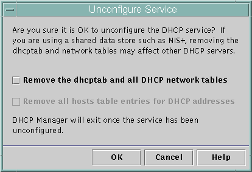

Previous
Previous
Unconfiguring DHCP Servers and BOOTP Relay Agents
When you unconfigure a DHCP server or a BOOTP relay agent, DHCP Manager takes the following actions:
Stops the DHCP daemon (in.dhpcd) process
Removes the /etc/inet/dhcpsvc.conf file, which records information about daemon startup and the data store location
The following figure shows the screen that is displayed when you choose to unconfigure a DHCP server.
Figure 14-4 Unconfigure Service Dialog Box in DHCP Manager
DHCP Data on an Unconfigured Server
When you unconfigure a DHCP server, you must decide what to do with the dhcptab table and the DHCP network tables. If the data is shared among servers, you should not remove the dhcptab and DHCP network tables. If the tables are removed, DHCP would become unusable across your network. Data can be shared through NIS+ or on exported local file systems. The file /etc/inet/dhcpsvc.conf records the data store used and its location.
You can unconfigure a DHCP server but leave the data intact by not selecting any of the options to remove data. If you unconfigure the server and leave the data intact, you disable the DHCP server.
If you want another DHCP server to take ownership of the IP addresses, you must move the DHCP data to the other DHCP server. You must move the data before you unconfigure the current server. See Moving Configuration Data Between DHCP Servers (Task Map) for more information.
If you are certain you want to remove the data, you can select an option to remove the dhcptab and network tables. If you had generated client names for the DHCP addresses, you can also elect to remove those entries from the hosts table. Client name entries can be removed from DNS, /etc/inet/hosts, or NIS+.
Before you unconfigure a BOOTP relay agent, be sure that no clients rely on this agent to forward requests to a DHCP server.
 How to Unconfigure a DHCP Server or a BOOTP Relay
Agent (DHCP Manager)
How to Unconfigure a DHCP Server or a BOOTP Relay
Agent (DHCP Manager)
Become superuser.
Start DHCP Manager.
#/usr/sadm/admin/bin/dhcpmgr &
From the Service menu, choose Unconfigure.
The Unconfigure Service dialog box is displayed. If the server is a BOOTP relay agent, the dialog box enables you to confirm your intention to unconfigure the relay agent. If the server is a DHCP server, you must decide what to do with the DHCP data and make selections in the dialog box. See Figure 14-4.
(Optional) Select options to remove data.
If the server uses shared data through NIS+ or in files shared through NFS, do not select any options to remove the data. If the server does not use shared data, select one option or both options to remove the data.
See DHCP Data on an Unconfigured Server for more information about removing data.
Click OK to unconfigure the server.
The Unconfigure Service dialog box and DHCP Manager are closed.
Configuring and Unconfiguring a DHCP Server Using dhcpconfig Commands
This section includes procedures to help you configure and unconfigure a DHCP server or a BOOTP relay agent by using dhcpconfig with command-line options.
How to Configure a DHCP Server (dhcpconfig
-D)
Before You Begin
Make sure that you have read Chapter 13, Planning for DHCP Service (Tasks) before you configure your DHCP server. In particular, you should use the guidelines in Making Decisions for Your DHCP Server Configuration (Task Map) to help you perform the following tasks:
Select the system that you want to use as a DHCP server.
Make decisions about your data store, lease policy, and router information.
Log in to the system on which you want to configure the DHCP server.
Become superuser or assume a role or user name that is assigned to the DHCP Management profile.
For more information about the DHCP Management profile, see Setting Up User Access to DHCP Commands.
Roles contain authorizations and privileged commands. For more information about roles, see "Configuring RBAC (Task Map)" in System Administration Guide: Security Services.
Configure the DHCP server by typing a command of the following format:
#/usr/sbin/dhcpconfig -D -r datastore -p location
datastore is one of the following: SUNWfiles, SUNWbinfiles, or SUNWnisplus.
location is the data-store-dependent location where you want to store the DHCP data. For SUNWfiles and SUNWbinfiles, the location must be an absolute path name. For SUNWnisplus, the location must be a fully specified NIS+ directory.
For example, you might type a command similar to the following:
dhcpconfig -D -r SUNWbinfiles -p /var/dhcp
The dhcpconfig utility uses the host's system files and network files to determine values used to configure the DHCP server. See the dhcpconfig(1M) man page for information about additional options to the dhcpconfig command that enable you to override the default values.
Add one or more networks to the DHCP service.
See How to Add a DHCP Network (dhcpconfig) for the procedure to add a network.
How to Configure a BOOTP Relay Agent (dhcpconfig
-R )
Before You Begin
Select the system that you want to use as a BOOTP relay agent, using the requirements listed in Selecting a Host to Run the DHCP Service.
Log in to the server that you want to configure as a BOOTP relay agent.
Become superuser or assume a role or user name that is assigned to the DHCP Management profile.
For more information about the DHCP Management profile, see Setting Up User Access to DHCP Commands.
Roles contain authorizations and privileged commands. For more information about roles, see "Configuring RBAC (Task Map)" in System Administration Guide: Security Services.
Configure the BOOTP relay agent by typing a command of the following format:
# /usr/sbin/dhcpconfig -R server-addresses
Specify one or more IP addresses of DHCP servers to which you want requests to be forwarded. If you specify more than one address, separate the addresses with commas.
For example, you might type a command similar to the following:
/usr/sbin/dhcpconfig -R 192.168.1.18,192.168.42.132
How to Unconfigure a DHCP Server or a BOOTP Relay
Agent (dhcpconfig -U)
Log in to the DHCP server or the BOOTP relay agent system that you want to unconfigure.
Become superuser or assume a role or user name that is assigned to the DHCP Management profile.
For more information about the DHCP Management profile, see Setting Up User Access to DHCP Commands.
Roles contain authorizations and privileged commands. For more information about roles, see "Configuring RBAC (Task Map)" in System Administration Guide: Security Services.
Unconfigure the DHCP server or the BOOTP relay agent:
# /usr/sbin/dhcpconfig -U
If the server does not use shared data, you can also use the -x option to remove the dhcptab and network tables. If the server uses shared data, do not use the -x option. The -h option can be used to remove host names from the host table. See the dhcpconfig(1M) man page for more information about dhcpconfig options.
See DHCP Data on an Unconfigured Server for more information about removing data.